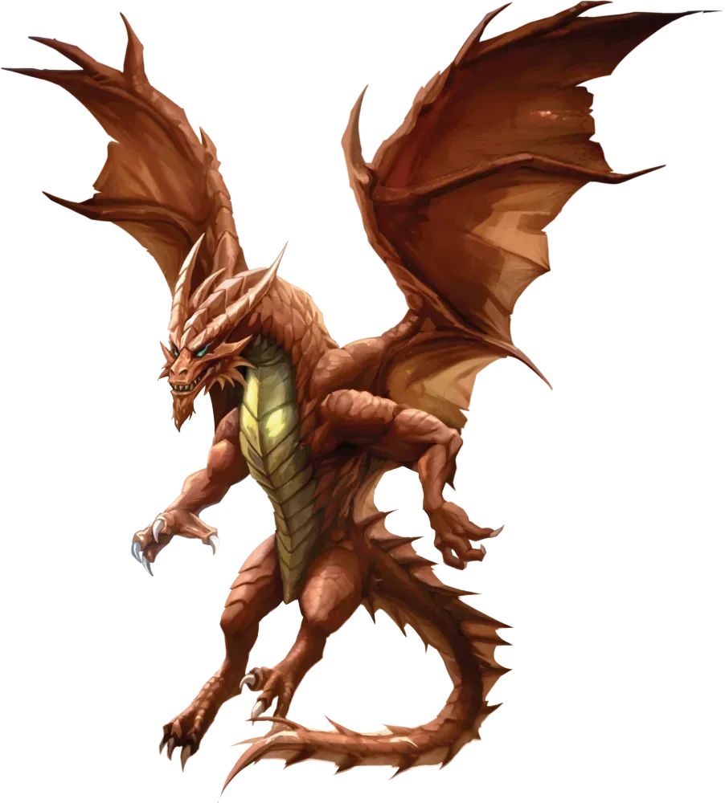

各年龄段数据卡
太古赤铜龙和它们年轻的同胞一样，依然是随性洒脱、热爱自由又热衷恶作剧的享乐主义者。非要说有什么区别的话，它们的这些习性通常只会随着年岁增长而愈演愈烈――尤其是那举世闻名的暴脾气。 诚然，太古赤铜龙比以往任何时候都更愿意从每一个可能的角度去审视事态，试图理解他人行事背后的动机并对他们的抉择感同身受；然而，一旦太古赤铜龙梳理完所有不同的视角并最终得出结论，无论此后历经何种风浪，它们都几乎必定会死守这一结论绝不更改。 那些无可救药的恶徒――哪怕太古赤铜龙已经本着疑罪从无的善意、站在他们的立场上审视过前因后果，却依旧恶贯满盈之辈――极易招致太古赤铜龙的雷霆震怒。倘若这名恶徒还奴役或压迫他人，并且毫无幽默感可言，那就更是难逃一劫。一旦到了那一步，就仿佛太古赤铜龙脑海里的某个开关被骤然拨动：原本的宽容与温和忍让瞬间荡然无存，取而代之的是深沉无边的怒火。站在太古龙面前的这股不知悔改的邪恶，顷刻间便成了它宣泄世间一切不公之愤的活靶子。 太古赤铜龙上演的恶作剧堪称传奇，不仅在年轻的赤铜龙之间被津津乐道，就连皮克精龙、丑角龙等其他酷爱恶作剧的巨龙传承也对其赞叹不已。太古赤铜龙在设计戏谑把戏时，会毫不犹豫地动用唯有太古龙的威能与资源方能施展的手笔――哪怕这会让旁人在事后回想起来时，一眼就能猜出这场秘密恶作剧究竟是谁的杰作。 与太古赤铜龙的暴脾气和恶作剧同样声名远扬的，还有它们的享乐主义哲学。大多数赤铜龙都热衷于纵情享受纯粹直接的感官欢愉，而太古赤铜龙更是将这种耽于逸乐的倾向锤炼成了一门高雅艺术。它们精准地知晓自己对某项消遣能够享受到何种分寸，赶在它从特别而美妙的体验沦为平庸乏味的例行公事、乃至因过度沉溺而生出厌腻之前恰到好处地收手。早在年轻得多的时候，大多数赤铜龙都有过对某种美食暴饮暴食的经历――结果吃得彻底倒了胃口，以至于在随后的好几个月甚至好几年里，连再看一眼昔日最爱的食物都受不了。但等到晋升为太古龙时，赤铜龙早已深谙平衡调剂、将愉悦感推至极致的奥秘：它们总能在最恰当的时机从旧爱转向新欢，利用两者的鲜明对比令新旧之乐相得益彰。正因如此，太古赤铜龙有时会与同样寿元悠长的太古靛青龙同胞展开善意的辩论――双方虽然同样珍视纵情享乐的生活方式，却在“是否应当过度放纵”以及“如何放纵”的问题上各执一词。 换位同乐世上唯一能比耍一出巧妙的恶作剧、讲一个让人笑破肚皮的笑话，或是变一手精彩戏法更令赤铜龙开怀的事，就是赤铜龙自己成为别人恶作剧捉弄的目标、听见一个前所未闻的新笑话，或是亲眼见证一场全新的魔术表演。偶尔，赤铜龙甚至会故意把自己摆在方便别人捉弄的位置上；哪怕心里早已料到即将到来的玩笑，它们依然能从这段经历中收获无穷的乐趣。能够融入他人所体验到的欢笑与喜悦之中，正是赤铜龙所能拥有的最珍贵的至宝。 |
 太古赤铜龙 |